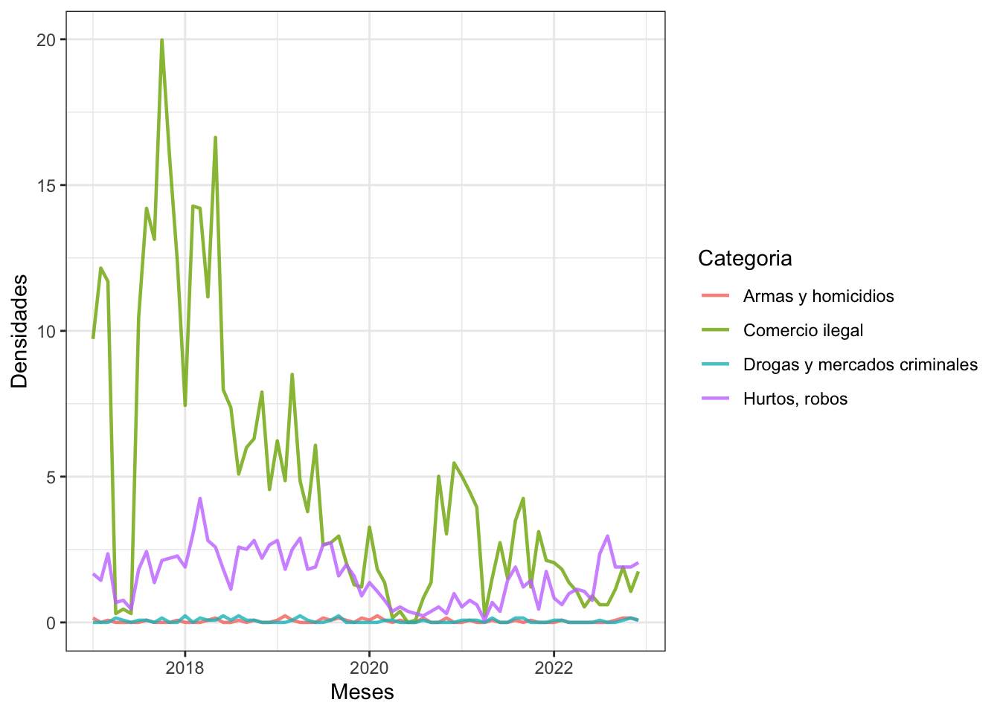
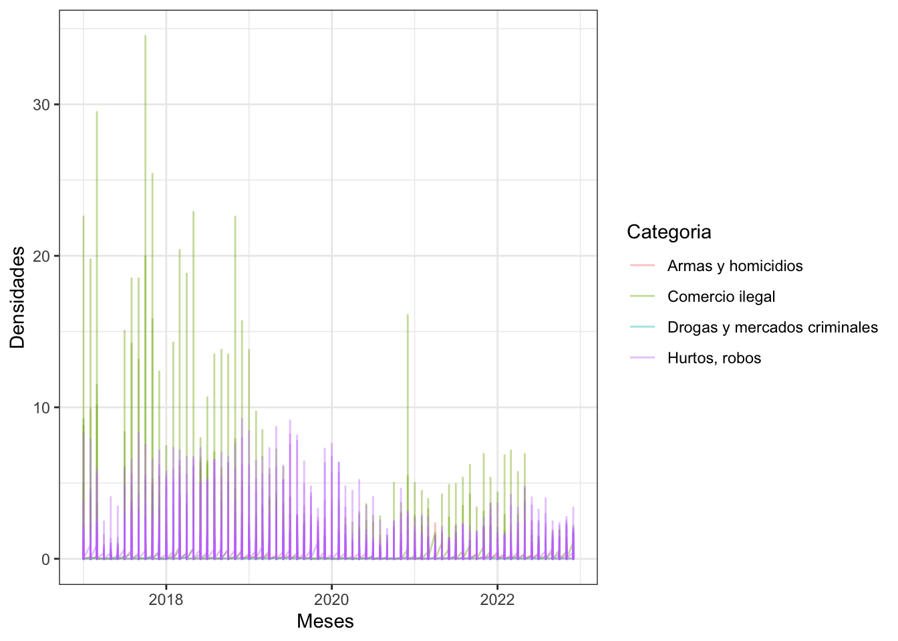
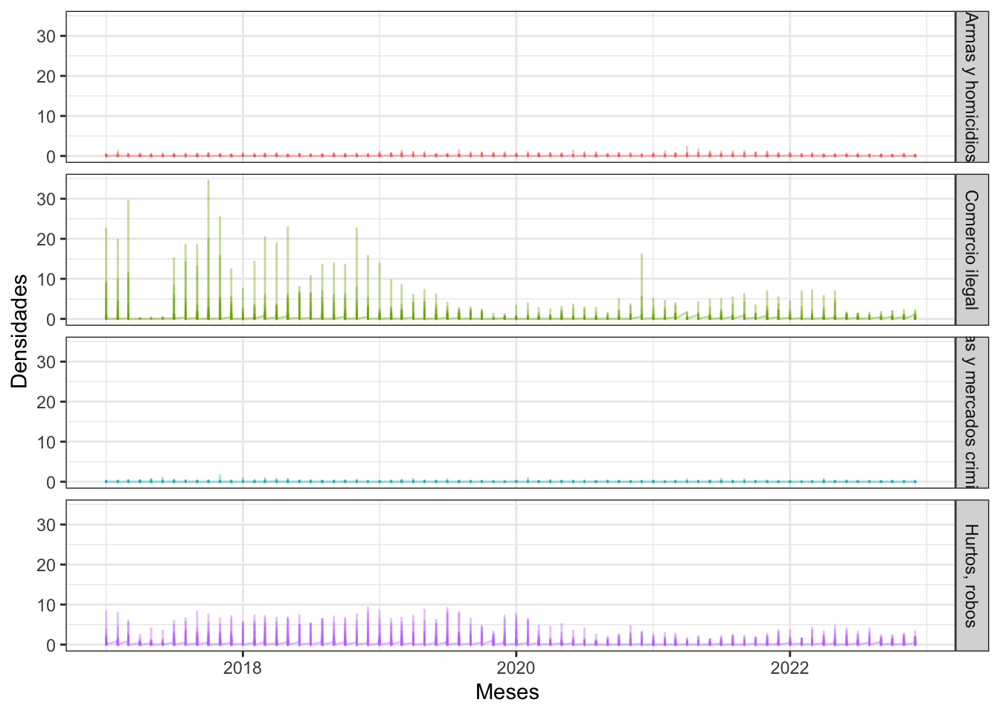
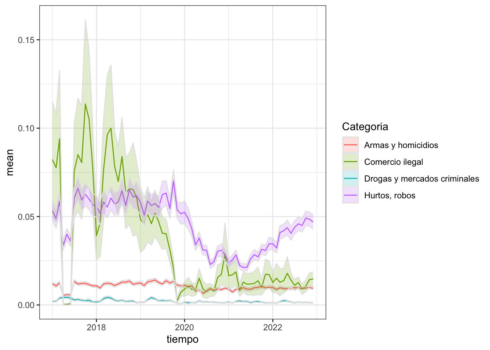
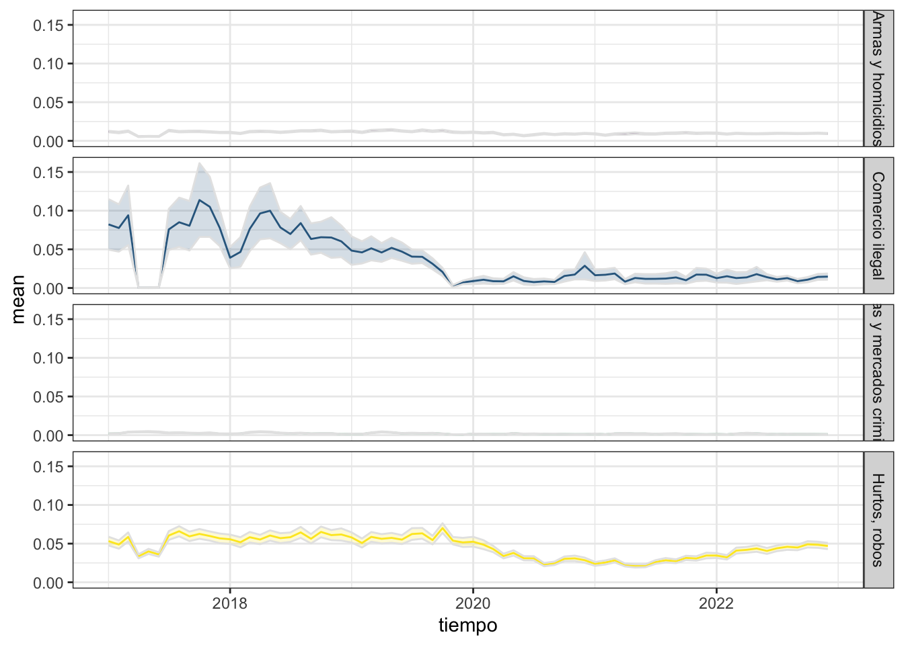

delitos_cat_bc_URB <- readRDS("data/delitos/delitos_eval_bcom_urb.rds")3 Datos de Panel
Transformación a Datos de Panel
3.1 Introducción
En estadística y econometría, el término de datos de panel se refiere a datos que combinan una dimensión temporal con otra transversal.
Un conjunto de datos que recoge observaciones de un fenómeno a lo largo del tiempo se conoce como serie temporal. Dichos conjuntos de datos están ordenados y la información relevante respecto al fenómeno estudiado es la que proporciona su evolución en el tiempo. Un conjunto transversal de datos contiene observaciones sobre múltiples fenómenos en un momento determinado. En este caso, el orden de las observaciones es irrelevante.
Un conjunto de datos de panel recoge observaciones sobre múltiples fenómenos a lo largo de determinados períodos. La dimensión temporal enriquece la estructura de los datos y es capaz de aportar información que no aparece en un único corte.
Para nuestro caso los datos de panel serán la densidad de delitos por zona censal y el orden temporal será construido con el mes y el año eso es lo que se realizará a continuación.
3.2 Cálculo de Total Delitos por Espacio y tiempo
En este punto se procederá a crear tablas de cálculo de total casos policiales por espacio las zonas censales, mientras que tiempo las variables de mes y año.

Lectura de base de datos de casos policiales correspondientes al proyecto de Barrios comerciales por ende en zonas urbanas.
Primeramente se debe extraer mes y año de la variable fecha para esto se hará uso de la librería Lubridate para manipulación de la variables temporales.
# Agregar la variable mes
delitos_urb <- delitos_cat_bc_URB %>%
st_drop_geometry() %>%
rename(fecha = FECHA_DEL) %>%
mutate(mes = month(fecha),
anno = year(fecha)) %>%
filter(!is.na(Categoria))
head(delitos_urb %>% select(fecha, mes, anno))A continuación se creará una tabla temporal que permitirá hacer una contabilidad de todos los delitos ocurridos por Zona censal, categoría, mes y año.
# todos los delitos
tab_del_all <- delitos_urb%>%
mutate(a_mes = paste0( anno, "_", sprintf("%02d",mes))) %>%
group_by(ZONA, Categoria, a_mes )%>%
summarise(Cantidad = n(), .groups = "keep")
head(tab_del_all)A continuación se procede a generar el cálculo de la suma de todos los eventos policiales ocurridos por cada zona censal categoría mes y año utilizando la librería Tidyr con la función pivot_wider()

tab_del_all_mes <- tab_del_all%>%
pivot_wider(names_from = a_mes, values_from = Cantidad,
names_prefix = "a_", values_fill = 0)%>%
dplyr::select(ZONA, Categoria,sort(names(.)[3:ncol(.)]))
head(tab_del_all_mes)#guargar resultados
write.xlsx(tab_del_all_mes,
"data/tablas/tablas_del_mes/del_zonas_all.xlsx", overwrite = T)
saveRDS(tab_del_all_mes, "data/tablas/tablas_del_mes/del_zonas_all.rds")3.3 Cálculo de tablas de densidad casos policiales
Lectura de Zonas Urbanas del INE, renomabramos la variable COD_INE_16 por ZONA, y seleccionamos además vaariable AREA.
zonas <- readRDS("data/ine/zonas_urb_consolidadas.rds")
info_zonas_base <- zonas %>%
st_drop_geometry() %>%
dplyr::select(ZONA = COD_INE_16, AREA) %>%
mutate(ZONA = as.character(ZONA))Calcular delitos anual y agregar área
tab_del_all_mes <- tab_del_all_mes %>%
as.data.frame() %>% #acelera el proceso
mutate(anual = rowSums(across(.cols = starts_with("a_")))) %>%
left_join(info_zonas_base, by = "ZONA")
head(tab_del_all_mes[, c("ZONA", "anual", "AREA")])Calcular la densidad delitos por Hectárea (10000 metros) por cada mes y también anualmente
tab_all_dens <- tab_del_all_mes %>%
mutate(across(starts_with("a_"), ~ .x/(AREA/10000))) %>%
mutate(dens_anual = anual / (AREA/10000))
#visualización de las pimeras y ultimas columnas
head(tab_all_dens[,c(1:10, 77:77)])Guardar resultados
write.xlsx(tab_all_dens,
"data/tablas/tabla_dens_mes/del_dens_all.xlsx",
overwrite = T)
saveRDS(tab_all_dens, "data/tablas/tabla_dens_mes/del_dens_all.rds")3.4 Tablas de Densidad de Delitos por Mes (2017 al 2022)
Unir Tablas de densidad de delitos por mes y anual con geometrías de zonas censales
info_zonas_base <- zonas %>%
dplyr::select(ZONA = COD_INE_16, REGION,
NOM_REGION, COMUNA, NOM_COMUNA) %>%
mutate(ZONA = as.character(ZONA))
del_dens_zonas <- info_zonas_base %>%
left_join(tab_all_dens, by ="ZONA") %>%
filter(!is.na(ZONA))
head(del_dens_zonas[,1:10])Simple feature collection with 6 features and 10 fields
Geometry type: MULTIPOLYGON
Dimension: XY
Bounding box: xmin: 417007.9 ymin: 7731793 xmax: 467736.3 ymax: 7761723
Projected CRS: WGS 84 / UTM zone 19S
ZONA REGION NOM_REGION COMUNA NOM_COMUNA
1 1405011001 01 REGIÓN DE TARAPACÁ 1405 PICA
2 1405011001 01 REGIÓN DE TARAPACÁ 1405 PICA
3 1405011001 01 REGIÓN DE TARAPACÁ 1405 PICA
4 1405011001 01 REGIÓN DE TARAPACÁ 1405 PICA
5 1401011001 01 REGIÓN DE TARAPACÁ 1401 POZO ALMONTE
6 1401011001 01 REGIÓN DE TARAPACÁ 1401 POZO ALMONTE
Categoria a_2017_01 a_2017_02 a_2017_03 a_2017_04
1 Armas y homicidios 0.001071077 0.000000000 0 0
2 Comercio ilegal 0.000000000 0.000000000 0 0
3 Drogas y mercados criminales 0.006426460 0.001071077 0 0
4 Hurtos, robos 0.000000000 0.000000000 0 0
5 Armas y homicidios 0.005149346 0.000000000 0 0
6 Comercio ilegal 0.000000000 0.000000000 0 0
geometry
1 MULTIPOLYGON (((467470.7 77...
2 MULTIPOLYGON (((467470.7 77...
3 MULTIPOLYGON (((467470.7 77...
4 MULTIPOLYGON (((467470.7 77...
5 MULTIPOLYGON (((417931.5 77...
6 MULTIPOLYGON (((417931.5 77...Guardar resultados
saveRDS(del_dens_zonas, "data/tablas/tabla_dens_mes/del_dens_zonas_pol.rds")3.5 Filtros de Interés
A continuación se realizará una serie de procedimientos para visualizar zonas de eventual interés, que eventualmente ustedes como analistas pueden modificar de acuerdo a sus objetivos. Como ejemplo se realizará una Selección de Zonas Censales con Mayor Densidad
Comezanremos conociendo los máximos y mínimos de densidad anual
range(del_dens_zonas$dens_anual, na.rm = T)
dens_anual <- del_dens_zonas$dens_anual
# hist(dens_anual, breaks = 100)
hist(dens_anual[dens_anual>50], breaks = 100)Definición de zonas que corresponde al porcentaje (5%) con mayor densidad
n_porc <- porc_df(del_dens_zonas, porcentaje = 5) # n corresponde a 5% datos
n_porc
dens_max <- del_dens_zonas %>%
slice_max(dens_anual, n = n_porc) # El 5 % de valores máximos
# Densidades
# mapview(dens_max, zcol = "dens_anual")Conocer que región tiene las zonas con mayor concentración de delitos
regiones_max <- dens_max %>%
st_drop_geometry() %>%
group_by(REGION) %>%
summarise(Cantidad = n()) %>%
arrange(desc(Cantidad))
regiones_maxSelección de los 20 con mayor densidad de delitos de la región metropolitana.
reg_dens_max <- dens_max %>%
filter(REGION == 13) %>%
slice_max(dens_anual, n = 20) %>%
filter(!is.na(dens_anual)) %>%
mutate(dens_anual = round(dens_anual, 1))Visualizavión de Mapas con quiebres de Fisher
# Crear Intervalos
library(classInt)
breaks_fisher <- classIntervals(reg_dens_max$dens_anual,
n = 10, style = "fisher",
largeN = 10000L)
mapview(reg_dens_max,
zcol = "dens_anual",
at = breaks_fisher$brks)Visualización de densidad máxima por alguna categoria
Ahora queremos conocer las 20 zonas censales con mayor densidad delitos por ejemplo “Hurtos, robos” en la región metrolitana de Santiago en todos los periodos.
unique(del_dens_zonas$Categoria)
categoria_tipo <- "Hurtos, robos"
dens_max_cat <- del_dens_zonas %>%
filter(REGION == 13) %>%
filter(Categoria==categoria_tipo)Visualización mapa
breaks_fisher <- classIntervals(dens_max_cat$dens_anual,
n = 10, style = "fisher",
largeN = 10000L)
# mapview(dens_max_cat,
# zcol = "dens_anual",
# at = breaks_fisher$brks)Filtraremos las 100 zonas censales con mayor densidad de “Hurtos, robos” en la región metropolitana
regiones_max_cat <- dens_max_cat %>%
st_drop_geometry() %>%
group_by(REGION) %>%
summarise(Cantidad = n()) %>%
arrange(desc(Cantidad))
regiones_max_cat
reg_dens_max_cat <- dens_max_cat %>%
filter(REGION == 13) %>%
filter(!is.na(dens_anual))%>%
slice_max(dens_anual, n = 100)
mapview(reg_dens_max_cat, zcol = "dens_anual")3.6 Densidades con Respecto al Tiempo

ts_info <- tab_all_dens %>%
dplyr::select(ZONA, Categoria, a_2017_01:a_2022_12) %>%
pivot_longer(cols = a_2017_01:a_2022_12,
names_to = "tiempo", values_to = "densidades") %>%
mutate(tiempo = gsub("a_", "", tiempo),
tiempo = gsub("_", "-", tiempo),
tiempo = ym(tiempo)) %>%
filter(!is.na(ZONA))
head(ts_info)# A tibble: 6 × 4
ZONA Categoria tiempo densidades
<chr> <chr> <date> <dbl>
1 10101011001 Armas y homicidios 2017-01-01 0
2 10101011001 Armas y homicidios 2017-02-01 0.139
3 10101011001 Armas y homicidios 2017-03-01 0.111
4 10101011001 Armas y homicidios 2017-04-01 0.0278
5 10101011001 Armas y homicidios 2017-05-01 0
6 10101011001 Armas y homicidios 2017-06-01 0 Gráficos
Visualizaremos el comportamiento de una zona Censal en el tiempo, al azar.
zona_id = c("13101021008")
ts_zona <- ts_info %>% filter(ZONA == zona_id)
pline <- ggplot(data = ts_zona,
aes(x = tiempo, y = densidades,
group = Categoria, colour = Categoria)) +
geom_line(alpha = 0.8, linewidth = 0.8 ) +
xlab('Meses ') +
ylab('Densidades') +
theme_bw()
pline
Gráficos de Serie de Tiempo Todas las Categorías. Se utilizará la librería Plotly para hacer gráficos dinámicos
pline <- ggplot(data = ts_info,
aes(x = tiempo, y = densidades,
group = Categoria, colour = Categoria)) +
geom_line(alpha = 0.4) +
xlab('Meses ') +
ylab('Densidades') +
theme_bw()
pline
pline <- ggplot() +
geom_line(data = ts_info, aes(x = tiempo, y = densidades,
colour = Categoria),
alpha = 0.4) +
xlab('Meses ') +
ylab('Densidades') +
theme_bw()+
facet_grid(Categoria ~ .) +
theme(legend.position = "none")
# pline
pline
# ggplotly(pline)Gráficos sobre médidas de centralidad (4 Primeras Categorías)
unique(ts_info$Categoria)[1] "Armas y homicidios" "Comercio ilegal"
[3] "Drogas y mercados criminales" "Hurtos, robos" df_tidy_mean_1 <- ts_info %>%
filter(!is.na(densidades)) %>%
filter(Categoria %in% unique(ts_info$Categoria)) %>%
group_by(tiempo, Categoria) %>%
summarise(n = n(),
mean = mean(densidades),
median = median(densidades),
sd = sd(densidades),
.groups = "keep") %>%
mutate(sem = sd / sqrt(n - 1),
CI_lower = mean + qt((1-0.95)/2, n - 1) * sem,
CI_upper = mean - qt((1-0.95)/2, n - 1) * sem)
mean_plot_1 <- ggplot(df_tidy_mean_1, aes(x = tiempo, y = mean, color = Categoria)) +
geom_line(aes(x = tiempo, y = mean, color = Categoria)) +
geom_ribbon(
aes(ymin = CI_lower, ymax = CI_upper, fill = Categoria),
color = "grey90",
alpha = 0.2 )+
theme_bw()
mean_plot_1
# ggplotly(mean_plot_1)Gráficos Desagregados
color_list <- viridis::viridis(length(unique(ts_info$Categoria)))
mean_plot_1_solos <- ggplot(df_tidy_mean_1, aes(x = tiempo, y = mean, color = Categoria)) +
geom_line(aes(x = tiempo, y = mean, color = Categoria)) +
geom_ribbon(
aes(ymin = CI_lower, ymax = CI_upper, fill = Categoria),
color = "grey90",
alpha = 0.2) +
theme_bw()+
scale_fill_manual(values = color_list) +
scale_color_manual(values = color_list) +
facet_grid(Categoria ~ .) +
theme(legend.position = "none")
mean_plot_1_solos
# ggplotly(mean_plot_1_solos)